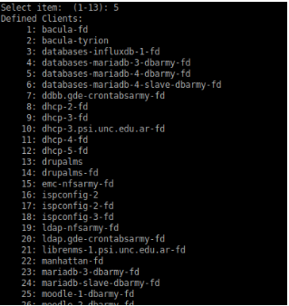

Como restaurar backups en bacula¶
Pasos para recuperar un backup¶
Para poder recuperar un backup es necesario ingresar al servidor tyrion
Una vez ingresados en el servidor ejecutamos
rancher exec -ti director/bacula-director9 bash
- Ya ingresados en el docker ingresamos a la consola de comandos de bacula
bconsole
- Ingresamos a la funcion para restaurar
restore
- Ejecutamos la opcion 5 ( muestra los backups más recientes de ese cliente )
Nos mostrara lo siguiente …
- Elegir el servidor en que se desea restaurar. Por ejemplo: dhcp-3, por lo que elijo la opcion 9
Antes de seleccionar lo que se desea restaurar, se puede visualizar o buscar un archivo determinado y seleccionar solo lo que se desea recuperar. Se puede navegar en la estructura de lo que se recupera con los comandos normales: cd, ls, pwd, dir. Además se cuentan con otros comandos como:
- estimate: muestra un resumen del total de archivos en el árbol, permitiendo estimar el tamaño de lo que será restaurado.
- find: muestra todos los archivos en el archivo que mapean con el argumento.
- mark: se usa para marcar los archivos o directorios que se desean recuperar. mark * : selecciona todos los archivos
- lsmark: es parecido al ls, pero lista solo los archivos marcados para ser restaurados.
- unmark: permite desmarcar archivos seleccionados para ser restaurados.
- count: cuenta la cantidad total de archivos en el árbol de directorio marcados para ser restaurados.
- done: termina la selección de archivos
- Si queremos buscar un archivo en particular
find *profile*
- Marcar todos los archivos a ser restaurados
mark *
- Una vez seleccionados todos los arhcivos a ser recuperados colocamos el comando done
done

- Bacula permite seleccionar el cliente en el cual se desean restaurar los Datos RECOMENDAMOS RESTAURAR SIEMPRE EN EL DIRECTOR bacula-fd . Para esto es necesario modificar el cliente en donde se restaurará. Por lo que es necesario colocar mod
- Hacemos los cambios necesarios para ver donde queremos restaurar el archivo, si queremos que reemplace, etc.
- Verificamos que los cambios en Restore Client se hayan realizado y confirmamos el restore escribiendo yes